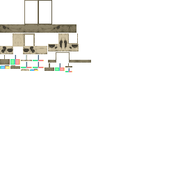

噬颚兽头颅
Eater Skull
英文名: Eater Skull命名空间 ID:
wan_ancient_beasts:eater_skull类型: 方块所属模组: Wan's Ancient Beasts资料检索: 🔎 在 MC百科 搜索「噬颚兽头颅」所属标签
获取方式
其他来源 (9)
wan_ancient_beasts:archaeology/digsite_badlandswan_ancient_beasts:archaeology/digsite_desertwan_ancient_beasts:archaeology/digsite_icespikeswan_ancient_beasts:archaeology/digsite_junglewan_ancient_beasts:archaeology/digsite_oldgrowthtaigawan_ancient_beasts:archaeology/digsite_peakswan_ancient_beasts:archaeology/digsite_plainswan_ancient_beasts:archaeology/digsite_savannawan_ancient_beasts:archaeology/digsite_taiga